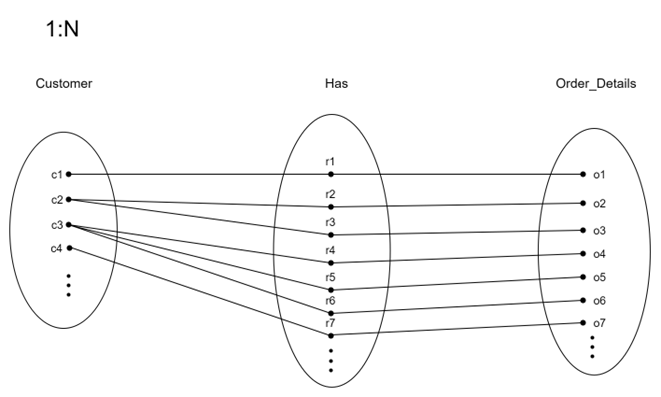
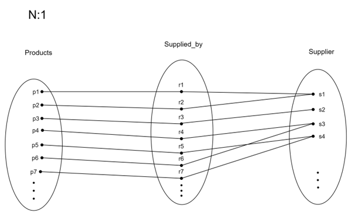

library(DBI)
library(readr)
library(RSQLite)
library(dplyr)
library(stringr)E-Commerce Database Management System Project
Load Necessary Libraries
Introduction
This project simulates a real-world e-commerce data environment, including all stages of data management, from database configuration to data analysis and reporting. As the database is created and managed with SQLite, GitHub Actions are used to automate processes enhancing workflow efficiency. In addition, Quarto is used in conjunction with R to conduct comprehensive data analysis and generate reports. Through this approach, technical skills and competencies necessary for effective data management are examined in-depth, mirroring the complexities and dynamics encountered in e-commerce.
Database Design and Implementation
Entity Relationship Diagram

Figure 1 shows the E-R diagram that simulates a real-world e-commerce data ecosystem, capturing the detailed relationships between entities and attributes essential for facilitating online transactions. In addition, it provides a comprehensive view of the e-commerce system, which serves as a platform for users to browse products, make purchases, and securely complete their payments.
Assumptions
The company only distributes products within the United Kingdom (UK).
The Currency used is Pound Sterling (GBP).
Attributes formats will be aligned with UK standard formats such as date , addresses , names …etc
Entities and Attributes
This section describes and illustrates the entities in the above ERD and their respective attributes.
- Customer
Shows us the users who previously have at least once purchased products and placed an order. Its attributes including names , emails, phone numbers , and addresses.
- Supplier
Vendors who provide products. Represent the source of the product items.The entity store contains attributes of names , addresses, emails, and status that indicates Whether the supplier is currently supplying items or not (Active/Inactive).
- Product
Describes all products in the stock and available for sale.Its attributes are name, price, and availability of the products.
- Order Details
Emphasises all details related to placed orders. Some of its attributes including order total , billing and shipping addresses, type and status of payment , date and status of the order.
- Category and Sub-Category
Category is the broad classification of products that share common features or are intended for a similar purpose. A sub-category is a more specific grouping of products within a category based on finer distinctions or attributes.
Sub-categories fall under a primary category and help to further organise products into narrower groups, making the product search process even more straightforward for customers.
- Product Discounts
The voucher number or offer code to be applied to eligible products. The amount of discount it offers as well as the status of the discount are the main attributes.
- Reviews
Contains Written comments and rating of product sold by verified buyers, the likes of the top reviews as well as the time stamp of when the review was made.
Design Considerations
Absence of an Order Entity
The model intentionally skips direct order management. Instead, it focuses on product management and customer interactions through reviews and payment methods. Additionally, This consideration will guarantee that products purchased by customers are not tracked or stored by the system to align with privacy policies.
Order Entity not considered in this ER design in order to follow best practices by not having to include orderId as part of product table which might affect the overall performance of DB retrieval.
Including Payment methods without an Order entity suggests a pre-registration of payment preferences or a simplified wallet storage that could be expanded in the future.
Relationships and Cardinalities
Order Detail Contains Products
This relation as can be seen in Figure 2 indicates that each order detail contains multiple products that have been placed by the customer. It aids to track the date , status , addresses, and payment method used in the transaction.

Associative Attribute (Quantity: The number of units of the product ordered in this line item.)
Customer Has Order Details
This relation will be created when customers order their first product or service. They will be linked with a particular order detail indicating what they ordered, reflecting the current state or progression throughout the process. One customer can be associated with multiple order statuses at any given time as illustrated in Figure 3. Moreover, it is good for tracking an order’s life cycle, allowing for updates, customer notifications, and management of the order fulfillment process.

Product Belongs to Category
Figure 4 specify that each product is classified under a specific Category where products can belong to only one category. This enables customers to browse products by category and helps retailers manage product listings more efficiently.

Category Self-Reference Relation
As reflected in Figure 5, category can have multiple subcategories, creating a hierarchically nested structure and making it easier for users to navigate the product catalogue. For example, “Home Appliances” is the parent category contains subcategories like Washing Machines , Food Processors, Dishwashers etc.

Product Supplied By Supplier
This relation is important for inventory management, reflecting the real-world scenario where a single supplier might provide various products, but each product is supplied by only one specific supplier Figure 6. It is essential to understand how products are sourced in a database model, where tracking the source of each product is crucial. The relation helps track inventory sources, manage supplier relationships, and ensure product availability.

Associative Attributes :
Supply_Contracts : Legal agreements that outline the terms and conditions under which one party will provide goods or services to another.
Delivery_Terms : Agreements that specify the price, or method for determining the price, at which goods or services will be sold or provided.
Pricing_ Agreements : Conditions in a contract that define the responsibilities, costs, and risk transfer points related to the transportation of goods from the seller to the buyer.
Product Qualifies For Discount
The relation signifying that the product is eligible for certain promotional discount enabling dynamic pricing strategies, encouraging sales, and providing customers with various savings opportunities on different products. In this context and for simplicity the relation representing one discount code or voucher that is valid to apply on multiple eligible products Figure 7.

Product Has Reviews
A product’s reviews are generated or provided by Customers reflecting the action of providing feedback or evaluation for a specific product or service to improve product offerings and customer service. However, one product can have multiple reviews over time as shown in Figure 8.

Logical Schema
Legend\(\footnote{Italic attributes indicate foreign keys}\)
Customers
Customers (\(\underline{\text{Cust\_ID}}\), Cust_First_Name, Cust_Last_Name, Cust_Building_Name, Cust_Street_Name, Cust_Zip_Code, Cust_Email, Cust_Phone_Number, Cust_Country_Code)
Products
Products (\(\underline{\text{Product\_ID}}\), Discount_Code, Category_ID, Supplier_ID ,Product_Name, Product_Availability, Product_Price)
Suppliers
Suppliers (\(\underline{\text{Supplier\_ID}}\), Supplier_Name, Supplier_Building_Name, Supplier_Street_Name, Supplier_Zip_Code, Supplier_Email, Supplier_Status)
Order_Details
Order_Details (\(\underline{\text{Order\_ID}}\), Customer_ID, Discount_Code, Order_Date, Shipping_Building_Name, Shipping_Street_Name, Shipping_Zip_Code, Order_Total, Order_Status, Payment_Type, Payment_Status, Billing_Building_Name, Billing_Street_Name, Billing_Zip_Code)
Discounts
Discounts (\(\underline{\text{Discount\_Code}}\), Category_ID, Product_ID, Discount_Amount, Discount_Status)
Reviews
Reviews (\(\underline{\text{Review\_ID}}\), Product_ID, Review_Timestamp, Product_Rating, Review_Text, Review_Likes)
Categories
Categories (\(\underline{\text{Category\_ID}}\), Sub_Cat_ID, Category_Name)
Many to Many : Order_details - Product
Order_Items (\(\underline{\text{Order\_ID, Product\_ID}}\), Quantity)
Physical Schema Creation
#Creating the db schema in SQL
con <- dbConnect(RSQLite::SQLite(), "ecommerce.db")
sql_file <- readLines("dbScript.sql")
for (sql_command in sql_file) {
if (sql_command!=""){
print(sql_command)
dbExecute(con,sql_command)
print("-------------DONE---------")
}
}Normalisation
First Normal Form (1NF) requires a table to have atomic values, unique rows through a primary key, and no duplicate columns.Thus , based on this definition the tables have been checked and considered to have atomic values with no duplicated columns.
Next, the team considered the Second Normal Form (2NF) which can be achieved when a table is in 1NF and all non-key attributes are fully functional and dependent on the primary key, eliminating partial dependency on any part of a composite key.
As a last normal form to be considered and for a table to be in third normal form (3NF), it should not have any transitive dependencies, and all non-prime attributes are fully functionally dependent on the primary key. The team perfoemed the required checks until all requirements of (3NF) are met as clarified in details in the following sections.
Customers:
Looking at the table, we can identify the following dependencies:
Cust_ID → Cust_First_Name Cust_ID → Cust_Last_Name Cust_ID → Cust_Building_Number Cust_ID → Cust_Building_Name Cust_ID → Cust_Street_Name Cust_ID → Cust_Country_Code Cust_ID → Cust_Email Cust_ID → Cust_Phone_Number
- Based on this analysis, the table appears to be in 3NF. Each non-key attribute depends only on the primary key (Cust_ID), and there are no transitive dependencies.
Order_items:
Product_ID , Order_ID → Quantity
Product_ID and Order_ID combined are representing composite key, and Quantity is functionally dependent on Product_ID and Order_ID. There are no transitive dependencies here.
All non-prime attributes are fully functionally dependent on the primary key.
Order_details:
Order_ID → Order_Date Order_ID → Order_Status Order_ID → Payment_Type Order_ID → Payment_Status Order_ID → Cust_ID Order_ID → Shipping_Building_Name Order_ID → Shipping_Street_Name Order_ID → Shipping_Zip_Code Order_ID → Billing_Building_Name Order_ID → Billing_Street_Name Order_ID → Billing_Zip_Code
Given that Cust_ID is a foreign key in this table and that there is a separate Customers table where Cust_ID serves as the primary key, it suggests that Cust_ID is not functionally dependent on any other attribute within this table. It is merely referencing the primary key of another table.
Therefore, the dependency involving Cust_ID does not violate 3rd Normal Form (3NF). The table appears to be in 3NF as long as all other attributes are functionally dependent on the primary key (Order_ID) and not on any non-key attributes.
Product Category
Category_ID → Category_Name
Category_ID is the primary key and it uniquely identifies Category_Name.
Product Discount
Discount_Code → Discount_Amount Discount_Code → Discount_Status
Analyzing the functional dependencies, it is found that Discount_Code is the primary key and it uniquely identifies Discount_Amount and Discount_Status.
Each Discount_Code corresponds to a specific Discount_Amount and Discount_Status, ensuring that the table adheres to the principles of 3rd Normal Form (3NF). There are also no transitive dependencies or non-key attributes determining other attributes within the table.
Products
Product_ID → Product_Name Product_ID → Product_Price Product_ID → Product_Availability
The table also contains foreign keys, namely Supplier_ID, Discount_Code, and Category_ID. These foreign keys are fully functionally dependent on the primary key and not on any other non-key attributes.
Examining the attributes’ functional dependencies, Product_ID emerges as the primary key, in which Product_Name, Product_Price and Product_Availability appears to be functionally dependent on it.
Reviews
Review_ID → Review_Timestamp Review_ID → Product_Rating Review_ID → Review_Text Review_ID → Review_Likes
In the Reviews table, Review_ID acts as the primary key, ensuring uniqueness. Attributes like Review_Timestamp, Product_Rating, Review_Text and Review_Likes are dependent on Review_ID.
Suppliers
Supplier_ID → Supplier_Name Supplier_ID → Supplier_Building_Name Supplier_ID → Supplier_Building_Number Supplier_ID → Supplier_Street_Name Supplier_ID → Supplier_Zip_Code Supplier_ID → Supplier_Email Supplier_ID → Supplier_Status
In the Suppliers table, Supplier_ID acts as the primary key. Attributes such as Supplier_Name, Supplier_Building_Name, Supplier_Building_Number, Supplier_Street_Name, Supplier_Zip_Code, Supplier_Email and Supplier_Status are dependent on Supplier_ID.
Given these functional dependencies where each attribute seems to be functionally dependent on the primary key, with no non-key attributes determining other, all tables appears to adhere to the principles of 3rd Normal Form (3NF).
Part 2: Data Generation and Management
Synthetic Data Generation
After the agreement on the schema mentioned in the previous section, the team started to generate synthetic data that to some extent, imitated realistic e-commerce as much as possible.
ChatGPT has been used as the main tool for this step as an alternative to Mockaroo, as the former produces more structural and logical data than the latter. [Appendix 1,2]. For tables consisting of foreign keys, R code has been used for assignment based of logic set by the team Appendix 3.
Data Import and Quality Assurance
To enhance data quality for e-commerce analysis and validate the csv data generated, we use R to perform 4 main checks [Refer data_validate.R]:
- Email id pattern check
- Phone number pattern check
- Duplicate entry check
- Primary key integrity check
Once the data has gone through all the checks, the updated csv files will be used to import into SQL. Importing the data into SQL is also done in R [Refer data_update.R]. This method focused on refining datasets for accurate analysis by identifying and eliminating invalid entries and duplicates, thereby maintaining the dataset’s uniqueness and reliability before inserting into Data Base.
Part 3: Data Pipeline Generation
To efficiently collaborate on this assignment, we have uploaded the project to Github. This was done so that the team could track changes, follow progress, collaborate on bug fixes etc. Moving the project to Github also allowed for implementation of version control and continuous integration.
Using Github Workflows, we were able to automate the process of validating data, updating data and data analysis. The workflow is triggered on pushing new data to the project. Once all 3 steps are completed successfully, the new files are committed and pushed to the project.
Figure below shows the new data reflecting in our analyses and sql db after being picked up by the workflow.
Github Repository Creation
The pipeline generation process consists of two phases. In the first phase, github repository has been created\(^{[1]}\) followed by integrating the posit cloud project. Additionally, all teams members have been added as collaborators.
Automated Workflow
Second phase was the automation process utilising workflow that trigger on specific events like push request to perform data updates, validation, and analysis. This will pick up any new data added to the data base and subsequently perform the required validation and analysis.
Figures 9, 10 shows the record count after 1st run of workflow (49) and then after second run of workflow (150).


Figure 11 illustrate console output showing the record count after data update using the workflow.

In Figure 12 the snippet is Timestamps that showed as an evidence of a working workflow

Part 4: Data Analysis and Reporting with Quarto in R

Information regarding product ratings, sales revenue, customer distribution, and order status was obtained through the establishment of a connection to an SQLite database and the execution of SQL queries. Subsequently, data visualisation techniques were used to identify the distribution and patterns within the data, offering insights into e-commerce operational dimensions.
The graph in Figure 13 shows the distribution of product ratings from 0 to 5 coloured by category name.

Figure 14 reflecting Top 5 Products Sorted by total Revenue.
After joining the “Order_Items”, “Discounts”, and “Products” tables, the derived value, which is the “Total Revenue”, is calculated by multiplying “Order_Item” quantity and “Product_Price” and deducting it with “Discount_Amount.

The graph in Figure 15 shows the distribution of customers by phone country codes.
Figure 16 displays the order status count of shipped, processing, delivered and cancelled orders.

Conclusion
Upon completion of this project, valuable insights are gained regarding the challenges and methodologies associated with an e-commerce context, including the design of databases, analysis of data, and presentation of findings in a clear and impactful manner. Ultimately, this project serves as a reference for future e-commerce projects in particular and data-driven projects in general, providing valuable insight into the modern data management landscape.
References
- To be redirected to the project repository click here
Appendices
Appendix 1

Appendix 2

Appendix 3